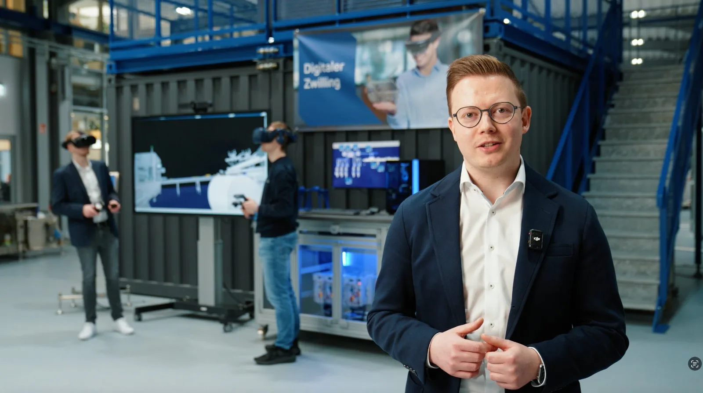

Die Plattform für den schnellen Digitalen Zwilling im Maschinenbau – weit über die virtuelle Inbetriebnahme hinaus. iPhysics verbindet alle Prozessschritte auf einer Plattform und bildet den gesamten Maschinenlebenszyklus digital ab.
Noch vor dem Kauf erleben Ihre Kunden ihre Anlage als interaktives 3D-Modell – und sehen ihre Prozesse bereits in Aktion. Kaufentscheidungen werden schneller, sicherer, überzeugender.
Konstruktion, Elektro und Software arbeiten parallel am selben digitalen Prototyp. Fehler werden früh erkannt.
Der echte SPS-Code läuft gegen den digitalen Zwilling, bevor die Anlage physisch existiert. Keine bösen Überraschungen bei der IBN.
Ihre Mitarbeiter lernen direkt am digitalen Modell – vor der IBN und parallel zur laufenden Produktion, ohne Stillstand.
Der digitale Zwilling wird zum mitgelieferten Produkt: Ihre Kunden nutzen ihn für Produktwechsel, Rüstoptimierung und das Onboarding neuer Mitarbeiter.
„Mit iPhysics haben wir eine physikbasierte Simulationsplattform entwickelt, die den digitalen Zwilling aus dem Engineering-Silo befreit und zur zentralen Plattform über den gesamten Maschinenlebenszyklus macht.“
Weber Food Technology zählt zu den führenden Lösungsanbietern der Foodindustrie – spezialisiert auf automatisiertes Aufschneiden, Verpacken und Verarbeiten von Wurst, Käse und Convenience-Produkten. Über 2.000 Mitarbeiter, fünf Standorte in Deutschland, komplexe Gesamtanlagen. Und Kunden, die heute mehr erwarten als eine 2D-Zeichnung.

„Mit iPhysics bringen wir unsere Anlagen bereits vor der ersten Schraube zum Leben. Wir validieren Linien mit Echtzeitdaten, finden Bottlenecks frühzeitig, testen Ergonomie per VR-Brille und schulen Bediener ohne einen einzigen Produktionsstopp.“
Das Ergebnis: kürzere Entwicklungszeiten, weniger Iterationsschleifen, keine physischen Prototypen – und ein Kunde, der nicht irgendeine Lösung bekommt, sondern nachweislich die beste.
Der Digitale Zwilling für Ihren gesamten Maschinen-Lifecycle. Von der ersten Vertriebspräsentation bis zur Instandhaltung – eine Plattform, alle Vorteile.
iPhysics ist Ihre 3D-Simulationsplattform für die virtuelle Inbetriebnahme – und weit mehr.
Ihr Vertrieb führt die Maschine virtuell beim Kunden vor – noch bevor sie gebaut ist. Der 3D-Konfigurator passt sie in Echtzeit an Kundenwünsche an, der Metaverse-Showroom macht Anlagen rund um die Uhr erlebbar – ohne Reisekosten, ohne Terminabstimmung. Kunden ‚begreifen‘ die Maschine vor der Kaufentscheidung: bis zu +40 % Abschlussquote.
Statt physischer Prototypen validieren Sie virtuell: Kollisionsprüfung am Bildschirm, Taktzeitoptimierung am Zwilling, Änderungen ohne Produktionsstopp. Das senkt die Entwicklungskosten um durchschnittlich 50 %.
Die virtuelle Inbetriebnahme findet im Büro statt, nicht beim Kunden. PLC-Code wird ohne Hardware getestet – 80 % aller Fehler sind eliminiert, bevor Ihr Team anreist. Mehrere Maschinen parallel, bis zu 75 % kürzere IBN-Zeit: produktivere Automatisierer, schneller produktive Kunden.
Remote-Training am Zwilling macht globalen Service aus Deutschland möglich: Bediener weltweit schulen, bevor die Maschine vor Ort ist – und später ohne Stillstand. Predictive Maintenance präzisiert Wartung und Ersatzteilprognosen, Troubleshooting gelingt oft remote. Bis zu −60 % Reisekosten bei höherer Kundenzufriedenheit.
Stabilität und Agilität: keine Quartalszahlen, sondern langfristige Partnerschaft. Direkte Entscheidungswege.
Während Konzerne planen, liefern wir. Schnelle Reaktionszeiten, keine Bürokratie.
Sie sind kein Ticket, sondern unser Partner. Eins-zu-eins-Betreuung.
Fokus auf Innovation. Herstellerunabhängig, kein Vendor-Lock-in. Systemoffen:
Krones, Weber und weitere Referenzen. Messbare ROI-Erfolge.
„iPhysics funktioniert mit Ihrer Steuerung – egal ob Siemens, Beckhoff, B&R oder Rockwell. Kein Vendor-Lock-in. Keine Abhängigkeit."
„Offene Schnittstellen statt geschlossener Systeme. iPhysics integriert sich in Ihre bestehende Infrastruktur – nicht umgekehrt."
„Entwickelt und zertifiziert nach Industriestandards – für den Einsatz in sicherheitskritischen Produktionsumgebungen."
Von CAD und PDM über Roboter- und SPS-Programmierung bis zur Echtzeit-Visualisierung: iPhysics ist offen und bindet Ihre bestehenden Systeme herstellerübergreifend an.
Kein Ticketsystem, keine Warteschleife: Ihre Anfrage geht unmittelbar an die Simulationsexperten von machineering — und wird persönlich beantwortet.
Lieber direkt ein Gespräch? Demo-Termin wählen